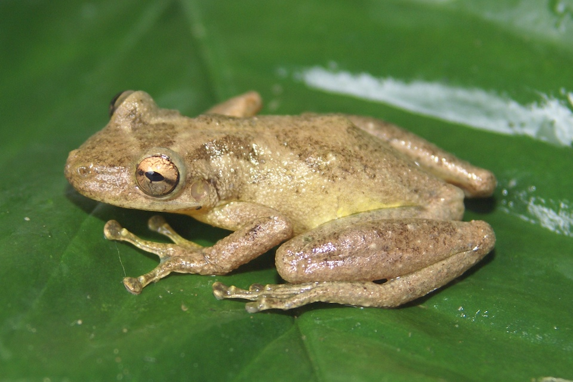

Uma perereca de tamanho médio, com cerca de 4 cm. Coloração do dorso amarelada ou castanho-escura com uma mancha triangular mais escura entre os olhos. É uma espécie arborícola, que ocupa tanto ambientes abertos quanto florestados em margens de poças temporárias ou permanentes. É uma espécie comum, que ocorre no sul e sudeste do Brasil, além da Argentina.
A segunda parte do nome científico deste anfíbio, “perereca”, deriva do tupi pere’reg, que significa saltar. A maioria dos anfíbios com um corpo semelhante a esta espécie, pernas desenvolvidas para o salto e com discos adesivos, são chamadas de perereca no Brasil. Sua desova é depositada sobre a vegetação aquática, geralmente nas margens das lagoas.
